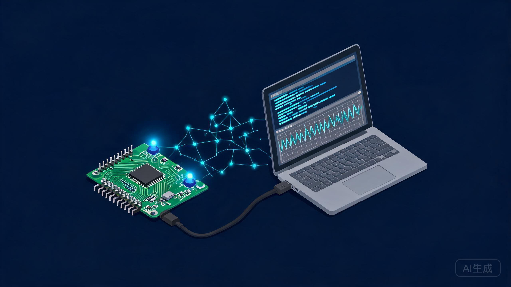

基于 Trae-CN 的软件需求 · 架构 · 编码 · 调试
全流程开发与实施方案说明书
以正点原子阿波罗 STM32F429IGT6 开发板“跑马灯”程序为贯穿案例，讲解如何在 Trae-CN 中完成从客户需求输入到串口下载、串口调试的完整工程闭环。
文档信息
00阅读指南与术语约定
本文是一份“照着做就能跑通”的实施方案。文中所有命令均可直接复制到 Trae-CN 内置终端执行，所有提示词均可直接粘贴到 Trae-CN 对话框使用。
标识 AI 执行 的环节
表示由你在 Trae-CN 对话框下达指令、AI 完成文档起草、代码编写或命令解释；你负责审核与确认。
标识 人工操作 的环节
表示必须动手完成的物理操作：插 USB、改 BOOT0 跳线、按复位键、观察 LED 现象。
术语表
| 术语 | 含义 |
|---|---|
| Trae-CN | 字节跳动推出的国内版 AI 原生 IDE（国内版官网 trae.com.cn），内置 AI 对话、代码生成、终端与扩展市场，本文所有 AI 操作均在其中进行。 |
| SRS | Software Requirements Specification，软件需求规范（规格说明）文档，回答“软件必须做什么”。 |
| SAD | Software Architecture Design，软件架构设计文档，回答“软件怎么分层、模块如何划分与协作”。 |
| HAL | ST 官方硬件抽象层库（STM32CubeF4 固件包的一部分），本文代码基于 HAL。 |
| ISP | In-System Programming，利用芯片出厂内置 Bootloader，通过 USART1 直接烧录 Flash，无需仿真器。 |
| Bootloader | STM32 出厂时固化在“系统存储器”中的程序，响应 PC 端 FlyMcu / stm32flash 的烧录协议（AN3155）。 |
| BOOT0 / BOOT1 | 启动模式配置引脚，决定复位后从主 Flash、系统存储器还是 SRAM 取指执行。 |
| CH340 | 板载 USB 转串口芯片，把 PC 的 USB 虚拟成 COM 口并连接到 STM32 的 USART1。 |
| 跑马灯 | 本文指 LED0、LED1 以固定节奏交替点亮/熄灭的最简 GPIO 输出例程。 |
01总体方案与实施流程
传统的单片机学习把“写文档、写代码、烧录、调试”当成四件互不相干的事；在 Trae-CN 工作流中，它们是同一条对话驱动的工程流水线：每一步的产物都是下一步的输入，AI 全程承担“初级工程师 + 资料员 + 命令行操作员”的角色，你承担“系统工程师 + 硬件操作员 + 验收人”的角色。
1.1 Trae-CN 在本项目中的能力地图
| Trae-CN 能力 | 在跑马灯项目中的具体用途 | 归属阶段 |
|---|---|---|
| AI 对话（Chat/Builder） | 需求澄清、生成 SRS 与 SAD、生成驱动与应用代码、解释编译错误、分析串口日志 | 全流程 |
| 文件工程区 | 直接在工作区中创建/修改 docs/、BSP/、App/，工程即文档库 | 需求/架构/编码 |
| 内置终端（PowerShell） | 执行 make 编译、stm32flash 烧录、python 抓串口日志 | 编译/下载/调试 |
| 扩展市场 | 安装 C/C++ 语言支持（智能补全）与串口监视器类扩展 | 环境/调试 |
| 项目规则（Rules） | 固化本项目约定：芯片型号、LED 引脚、编码规范、日志格式，避免 AI 每次“失忆” | 全流程 |
| 终端命令执行授权 | AI 可在你授权后自动执行编译与烧录命令，形成“改代码→重编译→重烧录”闭环 | 调试 |
1.2 全流程总览（本文档主线）
flowchart TD A(["客户输入：
想让两个灯轮流闪烁
并在电脑上看到状态"]) --> B B["① 需求澄清对话
（Trae-CN 反问 + 客户确认）"] --> C C["② SRS 需求规范文档
docs/SRS_led.md"] --> D D["③ SAD 架构设计文档
docs/SAD_led.md"] --> E E["④ CubeMX 配置 + AI 分层编码
BSP / App / Core"] --> F F["⑤ arm-none-eabi-gcc 编译
make -j8"] --> G{"编译通过？"} G -->|否| E G -->|是| H["⑥ BOOT0=1 进入 ISP
stm32flash 串口烧录"] H --> I["⑦ BOOT0=0 运行程序
printf 日志输出到 PC"] I --> J{"现象满足
SRS 验收标准？"} J -->|否| K["⑧ AI 分析日志/代码
定位并修复"] K --> E J -->|是| L(["⑨ 验收交付：
文档 + 源码 + HEX + 记录"]) style A fill:#e6f6f4,stroke:#0d9488,color:#0f1d33 style L fill:#e8f1fc,stroke:#0b68d4,color:#0f1d33 style G fill:#fff7e6,stroke:#d48806,color:#0f1d33 style J fill:#fff7e6,stroke:#d48806,color:#0f1d33
图中两个判断菱形是质量闸门：编译闸门保证代码在语法与链接层面成立，验收闸门保证程序行为与 SRS 逐条对应。任何一环不通过，都沿回溯线回到对应阶段，而不是“在板子上瞎试”。
1.3 人机分工与阶段交付物
| 阶段 | 你（人）负责 | Trae-CN（AI）负责 | 阶段交付物 |
|---|---|---|---|
| 需求 | 提供真实意图、确认澄清答案、签字基线 | 主动反问、消除歧义、按模板成文 | docs/SRS_led.md |
| 架构 | 评审分层合理性、做技术取舍决策 | 给分层方案、接口定义、目录树、时序图 | docs/SAD_led.md |
| 编码 | CubeMX 图形界面点选配置 | 编写 BSP/App 代码、改 Makefile、自审 | 源码工程 + firmware.elf/hex |
| 烧录 | 接 USB、切 BOOT0、按复位 | 执行 stm32flash 命令、解读回显 | 板内可运行固件 |
| 调试 | 观察并描述 LED/串口现象 | 抓日志、提假设、改代码、回归验证 | 调试记录 + 修复提交 |
| 验收 | 按验收标准逐条打钩 | 生成验收记录与交付清单 | 验收报告 |
1.4 建议实施计划（5 天 / 可压缩到 2 天）
02Trae-CN 开发与调试环境部署
本章完成后，你将拥有：一个能写文档/写代码的 AI IDE、一套能交叉编译 STM32 的 GCC 工具链、一个被 PC 正确识别的 CH340 串口，以及一条能把 HEX 烧进芯片的命令行通道。
2.1 硬件与软件清单
硬件准备 人工操作
| 物品 | 规格 / 型号 | 说明 |
|---|---|---|
| 阿波罗开发板 | 正点原子 APOLLO，MCU 为 STM32F429IGT6（Cortex-M4F，180MHz） | 板载 LED0（PB9）、LED1（PH10） |
| USB 数据线（关键） | Micro-USB / Type-C（以你手里板子接口为准），必须是数据线而非纯充电线 | 接底板标注 USB_UART / USB-232 的口（CH340 通道） |
| 跳线帽 | 2 个 | 用于 BOOT0 启动配置（部分批次为 B0 按键则免跳线） |
| ST-Link（可选） | 板载 ST-Link 或独立 V2/V3 | 本方案以串口 ISP 为主，SWD 仅作备用 |
主机软件清单（Windows 10/11）
| 软件 | 建议版本 | 用途 | 必选性 |
|---|---|---|---|
| Trae CN | 最新稳定版 | AI IDE：文档、代码、终端的统一工作台（trae.com.cn 下载 Windows 安装包） | 必装 |
| Arm GNU Toolchain | 13.x（AArch32 bare-metal） | 提供 arm-none-eabi-gcc 交叉编译器 | 必装 |
| Make for Windows | 4.x | 执行 CubeMX 生成的 Makefile（MSYS2 或 Equation 版均可）；也可用 Ninja 替代 | 必装 |
| STM32CubeMX | 6.10 以上 | 图形化配置时钟/GPIO/USART，生成 Makefile 工程（需 64 位 JRE） | 必装 |
| STM32CubeF4 固件包 | 1.28.x | HAL 库与启动文件，CubeMX 首次建工程时自动下载 | 必装 |
| CH341SER 驱动 | WCH 官方最新 | 让 Windows 识别板载 CH340，生成 COM 口 | 必装 |
| stm32flash | 0.7（win32 版） | 命令行 ISP 烧录，可在 Trae 终端中被 AI 直接调用 | 必装 |
| Python + pyserial | Python 3.10+ | 让 AI 写脚本抓取/保存串口日志（pip install pyserial） | 必装 |
| Git for Windows | 2.40+ | 版本管理与可用的 bash 工具集 | 建议 |
| FlyMcu（mcuisp） | 0.998+ | 图形化串口烧录工具，初学者兜底方案 | 建议 |
| Tera Term / PuTTY | 任意 | 独立串口终端，排查串口问题时方便对照 | 可选 |
| OpenOCD + ST-Link 驱动 | 0.12+ | SWD 在线单步调试，串口方案走通后再进阶 | 可选 |
2.2 安装顺序与 PATH 环境变量
- 安装 Trae CN官网下载 Windows 安装包，一路默认安装后登录。首次启动选择“打开文件夹”作为工作区模式（例如新建
D:\ws\led_f429作为本项目根目录）。
AI 执行 可让 Trae 帮你：“列出在 Windows 上从零搭建 STM32 GCC 命令行开发环境的软件和下载地址”，由 AI 给出当季最新链接。 - 安装 Arm GNU Toolchain下载
arm-gnu-toolchain-13.2.Rel1-mingw-w64-i686-arm-none-eabi.exe（arm.com → Tools & Software → Arm GNU Toolchain Downloads）。安装时勾选“Add path to environment variable”；若安装器未提供该选项，手动把其bin目录加入系统 PATH。 - 安装 Make推荐用 MSYS2：装好后执行
pacman -S make，再把C:\msys64\usr\bin加入 PATH；或直接下载 Equation 提供的make-4.x-without-guile-w32-bin.zip，解压后把bin目录加入 PATH。 - 安装 STM32CubeMXST 官网下载安装（需免费注册账号），安装器会同时引导安装 64 位 Java 运行时。首次进入后在 Help → Manage embedded software packages 中勾选 STM32Cube MCU Packages for F4 下载固件包。
- 安装 CH340 驱动在 WCH 官网下载
CH341SER.EXE，右键以管理员身份运行，点击“安装”，提示成功即可。此时先不插板子，等第 6 章接线后验证 COM 口。 - 安装 stm32flashSourceForge 的
stm32flash页面下载 win32 构建包，解压到固定目录（如C:\tools\stm32flash），将该目录加入 PATH，使任意终端可直接调用stm32flash.exe。 - 安装 Python 与 pyserial安装 Python 3 时勾选“Add python.exe to PATH”。安装完成后在终端执行：
powershell · 安装 pyserial pip install pyserial
- （可选）安装 FlyMcu 与 Tera Term作为图形化兜底工具，解压即可用，不写 PATH 也没关系。
- Arm GNU Toolchain 安装器：勾选 Add path to environment variable 的画面，确认 bin 目录被加入系统 PATH。
- STM32CubeMX 首启：Help → Manage embedded software packages 中 STM32Cube MCU Packages for F4 已勾选并下载完成（状态栏显示 Installed）。
- CH341SER 驱动安装：弹出 驱动预安装成功 的提示框。
- 设备管理器：端口(COM 和 LPT)下出现 USB-SERIAL CH340 (COMx)，无黄色叹号。
- 避坑：若安装后立即在 Trae 终端敲
arm-none-eabi-gcc提示找不到，不是安装失败，而是 Trae 进程未继承新 PATH——完全退出 Trae 再重开即可。
2.3 Trae-CN 工作区与 AI 环境配置
- 建立工程目录在 Trae-CN 中打开空文件夹
led_f429，让 AI 或手工建立如下骨架（stm32_led由第 5 章 CubeMX 生成）：led_f429/ ├── docs/ # SRS、SAD、调试记录都放这里 ├── tools/ # serial_capture.py 等辅助脚本 ├── logs/ # 串口抓取的运行日志 └── stm32_led/ # CubeMX 生成的 Makefile 工程（第 5 章） - 安装扩展在左侧扩展面板搜索并安装：① C/C++ Extension Pack（代码跳转与补全）；② 串口类扩展（搜索 serial monitor，以市场上架的串口监视器为准）。
- 选择代码模型在对话框顶部模型列表中选择你账号可用的最强代码模型（以实际列表为准，不指定具体名称）。长文档与多文件生成任务对模型推理能力敏感。
- 写入项目规则 AI 执行 让 Trae-CN 在工作区创建项目规则文件（
.trae/rules/*.md或界面提示的规则位置），把本项目“不会变的事实”固化下来，后续每次对话自动生效：.trae/rules/project.md · 项目规则（事实锚点） /* 目标硬件：正点原子阿波罗，MCU = STM32F429IGT6，HSE = 8MHz，SYSCLK = 180MHz */ /* LED0 = PB9，LED1 = PH10，灌电流接法：GPIO 输出 0 点亮、输出 1 熄灭 */ /* 调试串口：USART1，PA9=TX / PA10=RX，115200-8-N-1，板载 CH340 */ /* 软件约束：HAL 库 + 裸机超循环；分层 App → BSP → HAL；不使用动态内存(malloc) */ /* 编码规范：C99；硬件地址只出现在 BSP；对外接口必须有头文件声明与注释 */ /* 工具链：arm-none-eabi-gcc + Make；构建命令 make -j8；产物在 build/ */ /* 输出要求：任何命令必须能在 Windows PowerShell 中直接执行，不要给 Linux 专用语法 */
规则分两类：稳定事实（芯片、引脚、协议）写进规则文件长期复用；易变参数（闪烁周期、波特率需求）写进 SRS，改需求时只改文档不改规则。
2.4 环境联调验证
在 Trae-CN 中按 Ctrl + ` 打开内置终端（PowerShell），逐条执行以下验证命令，看到版本号即通过：
arm-none-eabi-gcc --version make --version python --version stm32flash -h 2>&1 | Select-Object -First 3
再验证 AI 与终端的协同：在对话框输入下面这句话，观察 AI 是否能正确调用终端并解读结果：
请在终端执行 arm-none-eabi-gcc --version 和 make --version，确认交叉工具链可用； 如果有任何一条提示“不是内部或外部命令”，请告诉我是哪个软件、该把哪个目录加入 PATH。
- arm-none-eabi-gcc --version 首行含 arm-none-eabi-gcc 13.2.1（版本号以你安装的为准）。
- make --version 首行含 GNU Make 4.x。
- stm32flash -h 打印用法说明而非“无法识别”。
- 避坑：若某条报
不是内部或外部命令，截图后去“系统属性→环境变量”确认该软件 bin 目录是否在 PATH 列表里。
- 四条版本命令均有正确回显
- Trae-CN 能在你的授权下执行终端命令并解读输出
- 项目规则文件就位，AI 回答硬件问题时能说出 PB9/PH10 与 USART1
- CH340 驱动安装成功（COM 口验证在第 6 章插板后进行）
03从客户需求到软件需求规范文档（SRS）
需求阶段的目标不是“写一篇漂亮文档”，而是把一句话的客户愿望，转成可设计、可测试、无歧义的需求条目。本章产出 docs/SRS_led.md，它是后续架构、编码和验收的唯一依据。
3.1 客户的原始输入
—— 这句话里每个词都有歧义：轮流闪的周期是多少？两灯切换有没有重叠时间？看到状态用什么接口、什么格式？上电到点亮的允许延迟是多久？这些都必须澄清。
3.2 需求澄清对话法（让 Trae-CN 先反问）
不要让 AI 一上来就写文档。第一条提示词的任务是逼 AI 提问：
你是我的嵌入式系统工程师。客户需求原话是： “我想用 STM32F429 阿波罗板子做个跑马灯，两个灯轮流闪，上电就跑， 电脑上还能看到它现在啥状态。” 在编写需求文档之前，请你先以“澄清问题清单”向我提问，要求： 1. 每条问题给出 2~4 个候选项和你的推荐项，我只需选择； 2. 问题覆盖：功能行为、时序参数、串口参数、异常/边界、可扩展预留； 3. 标注哪些问题若我不回答，你将采用推荐的缺省值； 4. 暂时不要写正文、不要写代码。
AI 输出的澄清清单通常如下（你按推荐项确认即可）：
| # | 澄清问题 | 候选项 | 推荐（本文采用） |
|---|---|---|---|
| Q1 | “轮流闪”的精确时序？ | ①500ms 切换 ②1s 切换 ③亮灭占空比可调 | 每灯亮 500ms 后交换，周期 1s，占空比 50% |
| Q2 | 上电初始状态？ | ①两灯全灭起步 ②LED0 先亮 ③随机 | LED0 先亮、LED1 灭，进入循环 |
| Q3 | 串口输出什么？ | ①仅状态变化行 ②周期性心跳 ③分级日志 | 每次切换输出一行状态日志，另加上电启动横幅 |
| Q4 | 串口参数？ | 波特率 9600 / 115200；数据位固定 8 | 115200-8-N-1，无校验无流控 |
| Q5 | 是否需要 PC 反向控制？ | ①不需要 ②预留命令行（停止/调速） | 预留：单字符命令 s 停 / r 跑 / h 帮助 |
| Q6 | 时序精度与阻塞策略？ | ①HAL_Delay 阻塞 ②SysTick 非阻塞 | V1 用 HAL_Delay（1ms tick，误差 ≤5ms），架构预留非阻塞接口 |
| Q7 | 上电到首个动作的时限？ | ①100ms ②500ms ③无要求 | 复位后 500ms 内输出启动横幅并点亮 LED0 |
确认后发出第二轮提示词：
澄清结论：Q1~Q7 全部采用你的推荐项。 请据此在 docs/SRS_led.md 中编写正式的软件需求规范文档，要求： 1. 包含引言、范围、术语、功能需求(FR)、接口需求(IF)、非功能需求(NFR)、 验收标准(AC)、需求跟踪矩阵； 2. 每条需求有唯一编号（FR-001…）、可验证的判定语句、优先级； 3. 验收标准必须是“在板子上可观测”的现象，禁止“运行良好”这类模糊词； 4. 引脚与时钟使用项目规则中的事实，不要自创引脚。
3.3 SRS 完整实例（跑马灯项目）
以下即 Trae-CN 生成、经你确认后的 docs/SRS_led.md 主体内容，可直接作为本项目的需求基线：
1. 引言与范围
本文档规定“阿波罗 F429 双 LED 跑马灯固件 V1.0”的软件需求。固件运行于 STM32F429IGT6，裸机无操作系统，基于 ST HAL 库开发，通过 USART1 输出运行状态日志并接收简单控制命令。本文档覆盖应用与板级驱动软件，不包含 CubeMX/HAL 库自身行为与硬件电气设计。
2. 功能需求（FR）
| 编号 | 需求描述（可验证） | 优先级 |
|---|---|---|
| FR-001 | 系统复位完成初始化后，LED0（PB9）点亮、LED1（PH10）熄灭，并在 500ms 内通过 USART1 输出启动横幅字符串 [LED] app start, period=500ms。 | 必须 |
| FR-002 | 正常运行态下，每隔 500ms 两灯状态交换（亮↔灭），任一 LED 亮态与灭态时长均为 500ms±25ms。 | 必须 |
| FR-003 | 每次状态交换时，通过 USART1 输出一行日志，格式为 [LED] tick=<ms> LED0=<ON|OFF> LED1=<ON|OFF>，tick 为上电毫秒数。 | 必须 |
| FR-004 | LED 为灌电流接法：GPIO 输出低电平点亮、高电平熄灭；应用层不得直接感知极性，由 BSP 层提供 LEDx_ON()/OFF()/TOGGLE() 语义化接口。 | 必须 |
| FR-005 | USART1 收到字符 s 时暂停闪烁（保持当前灯态）；收到 r 时恢复闪烁；收到 h 时输出帮助文本，列出全部命令。 | 应该 |
| FR-006 | 命令解析以换行符或回车结束；收到未定义字符时回显 [LED] unknown cmd, press h，且不得导致死机或灯态异常。 | 应该 |
| FR-007 | 暂停期间日志停止周期性输出，但每收到一条合法命令回显一条应答（如 [LED] paused）。 | 应该 |
| FR-008 | 闪烁周期参数以宏 LED_PERIOD_MS 集中定义，修改该宏重新编译后行为随之改变，应用代码中不得出现字面量 500。 | 必须 |
3. 接口需求（IF）
| 编号 | 接口 | 参数约定 |
|---|---|---|
| IF-001 | 调试串口 USART1：PA9=TX，PA10=RX | 115200 bit/s，8 数据位，无校验，1 停止位，无流控；TTL 3.3V，经板载 CH340 转 USB |
| IF-002 | GPIO 输出：PB9、PH10 | 推挽输出，初始高电平（熄灭），无上拉下拉需求（板外已有上拉） |
| IF-003 | 串口日志文本 | ASCII；每行以 \r\n 结尾；时间戳为十进制毫秒；最高输出负载约 40B/s |
| IF-004 | 烧录接口 | 同 USART1 物理通道，ISP 协议遵循 ST AN3155；固件交付为 Intel HEX |
4. 非功能需求（NFR）
| 编号 | 需求 |
|---|---|
| NFR-001 | 使用 arm-none-eabi-gcc 以 -Os -Wall -Wextra 编译，零警告；最终代码段（Flash 占用）不超过 32KB，RAM 占用不超过 16KB。 |
| NFR-002 | 软件分层为 App / BSP / HAL，应用层不得直接读写寄存器或调用 HAL GPIO 以外的底层细节。 |
| NFR-003 | 不使用动态内存分配；全部状态量为静态/栈变量；异常参数走防御式判断而非 assert 复位。 |
| NFR-004 | 源码需可被 STM32CubeMX 重新生成而不丢失：用户代码只写在 USER CODE BEGIN/END 区段及自建 BSP/App 目录。 |
5. 验收标准（AC，上板逐条核对）
| 编号 | 观测步骤 | 通过判据 | 追踪 |
|---|---|---|---|
| AC-001 | BOOT0=0 正常上电，复位 | 500ms 内 LED0 亮、LED1 灭，串口收到启动横幅 | FR-001 |
| AC-002 | 目视 10 个循环，或用串口时间戳统计 | 每灯亮/灭各 500ms±25ms，两灯永不同亮（切换瞬间除外） | FR-002 |
| AC-003 | 115200 打开串口持续 6s | 收到约 12 行状态日志，字段齐全、无乱码 | FR-003 / IF-003 |
| AC-004 | 依次发送 s、r、h、x | s 停闪且回显 paused；r 继续；h 回帮助；x 回 unknown 且不死机 | FR-005/006/007 |
| AC-005 | 检查编译输出 | -Wall -Wextra 零警告；size 满足 NFR-001 | NFR-001 |
3.4 需求确认与基线化
让 AI 在 SRS 末尾自动生成需求跟踪矩阵（RTM）骨架，保证每条 FR 都能在架构、代码、验收中找到归宿：
| 需求 | 架构模块（第 4 章） | 代码单元（第 5 章） | 验收用例 |
|---|---|---|---|
| FR-001/002/008 | app_led + bsp_led | App_LedRun / LED_PERIOD_MS | AC-001/002 |
| FR-003/004 | bsp_led + bsp_usart(日志) | LED0_ON… / LOG_I | AC-002/003 |
| FR-005/006/007 | app_led(命令处理) + bsp_usart(接收) | App_CmdHandle | AC-004 |
- 所有 FR/IF/NFR 编号唯一、可验证、无“快速/友好/稳定”类形容词
- 每个 FR 至少对应一条 AC，每条 AC 描述的是板上可观测现象
- 客户（或你自己）对澄清问卷逐项确认，SRS 冻结为 V1.0 基线
- 后续如需改周期/加灯效，走“变更 SRS → 回归架构/代码”的流程，不直接改代码
docs/SRS_led.md V1.0 冻结。下一章 AI 将严格以它为输入设计架构——这正是“需求驱动开发”与“直接上手点灯”的根本区别。04软件架构规范文档（SAD）
架构设计把“做什么”翻译成“怎么组织代码”。本章产出 docs/SAD_led.md：定义分层、目录、模块接口、运行时序与状态模型。AI 后续生成的每一个文件，都必须能在这张架构图里找到位置。
4.1 分层架构与设计决策
flowchart TB
subgraph L3["应用层 App（业务语义：跑马灯节奏 / 命令协议）"]
A1["app_led.c
App_Init / App_Task
App_PollByte / 命令解析"]
end
subgraph L2["板级支持层 BSP（阿波罗硬件适配）"]
B1["bsp_led.c
LEDx_ON/OFF/TOGGLE
封装灌电流极性"]
B2["bsp_usart.c + syscalls.c
UART 初始化/中断接收
printf 重定向"]
end
subgraph L1["ST 官方层（CubeMX 生成，不手改）"]
C1["HAL：GPIO / UART / RCC / Cortex"]
C2["CMSIS：启动文件 / 系统时钟 / 寄存器定义"]
end
PC(["PC 串口终端"]) -. 115200 8N1 .-> B2
A1 --> B1
A1 --> B2
B1 --> C1
B2 --> C1
C1 --> C2
style L3 fill:#e6f6f4,stroke:#0d9488
style L2 fill:#e8f1fc,stroke:#0b68d4
style L1 fill:#f1f4f9,stroke:#9fb0c6
依赖规则
上层可调用下层，下层绝不知道上层存在。BSP 不 include 任何 App 头文件；唯一例外是 UART 接收回调把字节上报给应用（通过弱回调接口 App_PollByte，方向仍为 BSP→App 的运行时事件，而非编译期依赖）。
硬件事实单点封装
PB9/PH10、灌电流极性、115200 这些事实只出现在 BSP。换一块板子只需重写 BSP，应用层一行不动——直接落实 NFR-002。
HAL_Delay(500) 阻塞实现。架构设计时发现：阻塞期间 CPU 无法响应 FR-005 的 s/r/h 串口命令（UART 中断虽能收字节，但主循环无法解析）。决策：采用
HAL_GetTick() 差值的非阻塞时间片（见 5.3 的 App_Task），同时满足 FR-002 与 FR-005。此决策回写 SRS 备注；若项目裁剪掉 FR-005~007，可退化为 while(1){ TOGGLE×2; HAL_Delay(500); } 最简版。4.2 目录结构与模块接口
CubeMX 工程生成后（第 5 章），在工程根目录平行建立 BSP/ 与 App/，最终结构如下：
| 模块 | 职责 | 对外接口（头文件契约） | 追踪需求 |
|---|---|---|---|
| app_led | 运行状态机、500ms 节奏调度、行命令解析与应答 | App_Init、App_Task、App_PollByte | FR-001/002/005/006/007/008 |
| bsp_led | GPIO 时钟、引脚初始化、语义化灯控（隐藏极性） | BSP_LED_Init、BSP_LED_On/Off/Toggle | FR-004 / IF-002 |
| bsp_usart | USART1 初始化、中断逐字节接收、日志输出通道 | BSP_USART_Init、LOG_I、huart1 | FR-003 / IF-001/003 |
| syscalls | newlib _write 桩，把 printf 导向 USART1 | int _write(int,char*,int) | FR-003 |
| CubeMX 生成层 | 时钟树、外设句柄、启动文件、中断向量 | main、MX_USART1_UART_Init 等 | NFR-004 |
让 Trae-CN 产出 SAD 的提示词：
请阅读 docs/SRS_led.md 和项目规则，在 docs/SAD_led.md 中编写软件架构设计文档： 1. 给出 App / BSP / HAL / CMSIS 分层图（用 Mermaid）与依赖规则； 2. 给出完整目录树、模块职责表、每个头文件的函数原型契约； 3. 给出上电初始化时序图与主循环时序图（Mermaid sequenceDiagram）； 4. 给出运行状态机（Mermaid stateDiagram），覆盖 RUNNING/PAUSED 与命令转移； 5. 主动指出 SRS 中相互冲突或难以实现的点，用“设计决策记录(ADR)”给出取舍； 6. 暂不写实现代码。
4.3 运行时序与状态模型
sequenceDiagram
participant PC as PC 串口终端
participant M as main()
participant APP as app_led
participant BSP as bsp_led/bsp_usart
M->>BSP: HAL_Init / SystemClock_Config / BSP_LED_Init
M->>BSP: BSP_USART_Init（含 Receive_IT 挂接收）
M->>APP: App_Init()：LED0 亮、输出启动横幅
loop 超循环 while(1)
M->>APP: App_Task()
APP->>BSP: 每 500ms Toggle 两灯 + 输出状态行
PC->>BSP: 发送 "s\r\n"
BSP-->>APP: RxCpltCallback → App_PollByte 逐字节拼装
APP->>APP: 行结束 → 解析命令 → state=PAUSED
APP-->>PC: "[LED] paused"
end
stateDiagram-v2 [*] --> INIT INIT --> RUNNING: App_Init 完成
LED0 亮 / 横幅输出 RUNNING --> PAUSED: 收到命令 s PAUSED --> RUNNING: 收到命令 r RUNNING --> RUNNING: 每 500ms 交换灯态并输出日志 PAUSED --> PAUSED: h 打印帮助 / 未知命令回显 note right of PAUSED 灯态冻结；UART 仍可收命令 end note
- SAD 中每个模块都能回溯到至少一条 FR/NFR
- 依赖方向只有“上层 → 下层”，无反向、无跨层、无头文件环
- 所有与硬件相关的字面量（引脚、波特率、极性）只在 BSP 出现
- ADR 已记录非阻塞取舍并回写 SRS 备注
docs/SAD_led.md V1.0 冻结。下一章开始写代码——AI 写代码时必须引用本文件，而不是“自由发挥”。05软件代码实现（CubeMX + Trae-CN 编码 + 编译）
本章完成工程创建、外设配置、BSP/App 代码编写与 GCC 编译。人负责在 CubeMX 中点选（图形配置 AI 无法代劳），AI 负责全部手写代码与 Makefile 改造。
5.1 CubeMX 图形化配置 人工操作
- 新建工程选芯片CubeMX → ACCESS TO MCU SELECTOR → 搜索 STM32F429IGT6 → 开始工程。
- 配置调试串口与 LED 引脚在引脚图上点选：PA9→USART1_TX，PA10→USART1_RX；PB9 与 PH10→GPIO_Output，并在左侧分别命名为 LED0、LED1。USART1 模式选 Asynchronous，参数保持 115200 / 8 / None / 1；在 NVIC Settings 中勾选 USART1 global interrupt。
- 配置 GPIO 参数PB9、PH10 均设为：推挽输出（Output Push Pull）、无上下拉、低速、初始输出电平 High（上电熄灭）。
- 配置时钟RCC 中 HSE 选 Crystal/Ceramic Resonator；进入 Clock Configuration 页，输入 HCLK = 180 MHz 后回车，让 CubeMX 自动求解 PLL（典型解 PLLM=8、PLLN=360、PLLP=2、APB1=45MHz、APB2=90MHz）。SYS Timebase Source 保持 SysTick。
- 工程设置Project Manager：工程名
stm32_led，位置选led_f429/目录；Toolchain/IDE 选 Makefile。Code Generator 勾选“Copy only the necessary library files”“Generate .c/.h pair”，保留默认的 USER CODE 保护区。 - 生成代码点击 GENERATE CODE。完成后你应看到
Core/、Drivers/和Makefile。
5.2 让 Trae-CN 按架构生成代码
回到 Trae-CN，先验证 AI 能读懂刚生成的工程，再下编码指令：
docs/SAD_led.md 是已冻结的架构，请严格按它实现： 1. 新建 BSP/led、BSP/usart、App 目录及 5 个文件（bsp_led.h/.c、 bsp_usart.h/.c、syscalls.c、app_led.h/.c）； 2. main.c 只允许在 USER CODE BEGIN/END 保护区内添加代码； 3. 修改 Makefile：把新增 .c 加入 C_SOURCES、新增目录加入 C_INCLUDES； 4. 不使用动态内存；硬件参数只出现在 BSP；周期用 LED_PERIOD_MS 宏； 5. printf 通过 newlib 的 _write 重定向到 USART1； 6. 完成后先不要编译，列出你改动/新增的文件清单等我确认。
5.3 完整代码清单（与 SAD 一致）
① BSP/led/bsp_led.h —— 语义化灯控接口
/* 板级 LED 驱动：应用层只使用逻辑灯号，不感知引脚与极性 */ #ifndef BSP_LED_H #define BSP_LED_H #include "stm32f4xx_hal.h" /* 闪烁周期：全工程唯一的调参点（FR-008） */ #define LED_PERIOD_MS 500u typedef enum { LED_0 = 0, /* 板载 LED0 = PB9 */ LED_1 /* 板载 LED1 = PH10 */ } bsp_led_t; void BSP_LED_Init(void); void BSP_LED_On(bsp_led_t led); void BSP_LED_Off(bsp_led_t led); void BSP_LED_Toggle(bsp_led_t led); #endif
② BSP/led/bsp_led.c —— 硬件事实唯一存放处
#include "bsp_led.h" typedef struct { GPIO_TypeDef *port; uint16_t pin; } bsp_led_map_t; /* 引脚映射表：换板子只改这张表 */ static const bsp_led_map_t s_led_map[] = { [LED_0] = { GPIOB, GPIO_PIN_9 }, [LED_1] = { GPIOH, GPIO_PIN_10 }, }; void BSP_LED_Init(void) { GPIO_InitTypeDef gpio = {0}; __HAL_RCC_GPIOB_CLK_ENABLE(); __HAL_RCC_GPIOH_CLK_ENABLE(); gpio.Mode = GPIO_MODE_OUTPUT_PP; gpio.Pull = GPIO_NOPULL; gpio.Speed = GPIO_SPEED_FREQ_LOW; gpio.Pin = GPIO_PIN_9; HAL_GPIO_Init(GPIOB, &gpio); gpio.Pin = GPIO_PIN_10; HAL_GPIO_Init(GPIOH, &gpio); /* 灌电流接法：低电平点亮，初始全部熄灭 */ HAL_GPIO_WritePin(GPIOB, GPIO_PIN_9, GPIO_PIN_SET); HAL_GPIO_WritePin(GPIOH, GPIO_PIN_10, GPIO_PIN_SET); } void BSP_LED_On(bsp_led_t led) { if (led > LED_1) { return; } /* 防御式判断 NFR-003 */ HAL_GPIO_WritePin(s_led_map[led].port, s_led_map[led].pin, GPIO_PIN_RESET); } void BSP_LED_Off(bsp_led_t led) { if (led > LED_1) { return; } HAL_GPIO_WritePin(s_led_map[led].port, s_led_map[led].pin, GPIO_PIN_SET); } void BSP_LED_Toggle(bsp_led_t led) { if (led > LED_1) { return; } HAL_GPIO_TogglePin(s_led_map[led].port, s_led_map[led].pin); }
③ BSP/usart/bsp_usart.h —— 日志宏与接收上报
#ifndef BSP_USART_H #define BSP_USART_H #include "stm32f4xx_hal.h" #include <stdio.h> extern UART_HandleTypeDef huart1; /* CubeMX 在 usart.c 中定义 */ void BSP_USART_Init(void); /* 日志输出：严格匹配 SRS 的 [LED] 前缀，\r\n 结尾（IF-003）。 需要分级时可在此扩展 LOG_W/LOG_E。 */ #define LOG_I(fmt, ...) printf("[LED] " fmt "\r\n", ##__VA_ARGS__) #endif
④ BSP/usart/bsp_usart.c —— 中断逐字节接收
#include "bsp_usart.h" #include "app_led.h" static uint8_t s_rx_byte; /* 单字节接收缓冲 */ void BSP_USART_Init(void) { MX_USART1_UART_Init(); /* CubeMX 生成的初始化 */ HAL_UART_Receive_IT(&huart1, &s_rx_byte, 1); /* 挂上中断接收 */ } /* 每收到 1 字节进一次回调：原样上报给应用层拼行（FR-006） */ void HAL_UARTRxCpltCallback(UART_HandleTypeDef *huart) { if (huart->Instance == USART1) { App_PollByte(s_rx_byte); HAL_UART_Receive_IT(&huart1, &s_rx_byte, 1); /* 重新挂接收 */ } }
⑤ BSP/usart/syscalls.c —— printf 重定向（GCC/newlib 关键）
/* GCC newlib 的标准输出桩：printf 最终调用 _write， 在这里把字符流交给 USART1 发送。 */ #include "stm32f4xx_hal.h" extern UART_HandleTypeDef huart1; int _write(int file, char *data, int len) { (void)file; if ((data == 0) || (len <= 0)) { return 0; } HAL_StatusTypeDef st = HAL_UART_Transmit(&huart1, (uint8_t *)data, (uint16_t)len, 100); return (st == HAL_OK) ? len : 0; }
-lnosys。正常情况下目标文件中的 _write 会优先于静态库被采用；若个别工具链版本仍报重复定义，从 Makefile 的 LIBS 行删除 -lnosys 即可。打印 %f 浮点时还需在 LDFLAGS 加 -u _printf_float（本项目不需要）。⑥ App/app_led.h 与 App/app_led.c —— 业务状态机
#ifndef APP_LED_H #define APP_LED_H #include <stdint.h> void App_Init(void); void App_Task(void); /* 主循环反复调用，非阻塞 */ void App_PollByte(uint8_t ch); /* 串口字节喂入口 */ #endif
#include "app_led.h" #include "bsp_led.h" #include "bsp_usart.h" #include <string.h> typedef enum { ST_RUN = 0, ST_PAUSE } app_state_t; static app_state_t s_state; static uint32_t s_last_tick; static char s_line[16]; static uint8_t s_line_len; static void CmdExecute(const char *cmd) { if (strcmp(cmd, "h") == 0) { LOG_I("cmds: h=help s=stop r=run"); } else if (strcmp(cmd, "s") == 0) { s_state = ST_PAUSE; LOG_I("paused"); } else if (strcmp(cmd, "r") == 0) { s_state = ST_RUN; LOG_I("running"); } else { LOG_I("unknown cmd, press h"); /* FR-006 容错 */ } } void App_PollByte(uint8_t ch) { if ((ch == '\r') || (ch == '\n')) { if (s_line_len > 0u) { CmdExecute(s_line); s_line_len = 0; s_line[0] = '\0'; } return; } if (s_line_len < (uint8_t)(sizeof(s_line) - 1u)) { s_line[s_line_len++] = (char)ch; s_line[s_line_len] = '\0'; } } void App_Init(void) { BSP_LED_Init(); BSP_USART_Init(); s_state = ST_RUN; s_last_tick = 0u; s_line[0] = '\0'; s_line_len = 0u; BSP_LED_On(LED_0); /* 上电初态：LED0 亮（FR-001） */ BSP_LED_Off(LED_1); LOG_I("app start, period=%ums", LED_PERIOD_MS); } void App_Task(void) { GPIO_PinState pin0, pin1; if (s_state == ST_PAUSE) { return; } /* 暂停态只响应命令 */ uint32_t now = HAL_GetTick(); if ((now - s_last_tick) < LED_PERIOD_MS) { return; } /* 时间片未到 */ s_last_tick = now; BSP_LED_Toggle(LED_0); BSP_LED_Toggle(LED_1); pin0 = HAL_GPIO_ReadPin(GPIOB, GPIO_PIN_9); pin1 = HAL_GPIO_ReadPin(GPIOH, GPIO_PIN_10); LOG_I("tick=%lu LED0=%s LED1=%s", now, (pin0 == GPIO_PIN_RESET) ? "ON" : "OFF", (pin1 == GPIO_PIN_RESET) ? "ON" : "OFF"); }
⑦ main.c —— 只在保护区内写 3 行
/* USER CODE BEGIN Includes */ #include "app_led.h" /* USER CODE END Includes */ ... int main(void) { HAL_Init(); SystemClock_Config(); MX_GPIO_Init(); MX_USART1_UART_Init(); /* CubeMX 已生成；BSP_USART_Init 会再次调用， 为避免重复，可删除此行，统一由 App_Init 初始化 */ /* USER CODE BEGIN 2 */ App_Init(); /* USER CODE END 2 */ while (1) { App_Task(); /* USER CODE BEGIN 3 */ /* USER CODE END 3 */ } }
App_Init() 内部已调用 BSP_USART_Init()（其中执行 MX_USART1_UART_Init() 并挂接收中断）。为避免 UART 初始化两次，让 AI 删掉 main 中独立的 MX_USART1_UART_Init() 调用，GPIO 初始化同理由 BSP_LED_Init() 负责后可删除 MX_GPIO_Init()，但二选一保留也可正常工作，重复初始化无副作用。⑧ Makefile —— 把 BSP/App 纳入构建
# 1) 源文件清单追加 C_SOURCES += \ ../BSP/led/bsp_led.c \ ../BSP/usart/bsp_usart.c \ ../BSP/usart/syscalls.c \ ../App/app_led.c # 2) 头文件搜索路径追加 C_INCLUDES += \ -I../BSP/led \ -I../BSP/usart \ -I../App # 3) 若链接报 _write 重复定义，再移除 LIBS 中的 -lnosys
5.4 编译构建与 AI 代码自审
在 Trae-CN 终端进入工程目录编译：
PS D:\ws\led_f429> cd stm32_led PS D:\ws\led_f429\stm32_led> make -j8 arm-none-eabi-gcc ... App/app_led.c arm-none-eabi-size build/stm32_led.elf text data bss dec hex filename 9124 112 1608 10844 2a5c build/stm32_led.elf arm-none-eabi-objcopy -O ihex build/stm32_led.elf build/stm32_led.hex arm-none-eabi-objcopy -O binary -S build/stm32_led.elf build/stm32_led.bin
构建成功判据（对应 AC-005 / NFR-001）：零 warning；size 输出中 text+data 远小于 1MB Flash、bss 远小于 192KB RAM；build/ 下同时得到 .elf（调试用）、.hex（串口烧录用）、.bin（备用）。
然后让 AI 做一次对照架构的自审：
请按 docs/SRS_led.md、docs/SAD_led.md 和项目规则审查本次新增的全部代码，重点： 1. 是否有字面量 500 绕过 LED_PERIOD_MS；硬件引脚是否只出现在 BSP； 2. 中断回调里是否有阻塞/重入风险；缓冲区是否可能越界； 3. main.c 的修改是否全部位于 USER CODE 保护区； 4. 列出问题清单（按“必须改/建议改”分级），先不要动代码。
| 典型编译/链接错误 | 原因 | 处置 |
|---|---|---|
make: command not found / “不是内部或外部命令” | Make 或工具链未入 PATH，或装完未重启 IDE | 补 PATH 后完全重启 Trae-CN |
fatal error: stm32f4xx_hal.h: No such file | C_INCLUDES 未加 BSP 目录或 CubeMX 路径 | 检查 Makefile 头文件路径 |
undefined reference to _write | syscalls.c 未加入 C_SOURCES 或没被编译 | 补 Makefile 源文件清单后 make clean 重编 |
multiple definition of '_write' | 与 -lnosys 桩冲突（少见） | 从 LIBS 删除 -lnosys |
undefined reference to App_PollByte | app_led.c 未编译或函数签名不一致 | 检查 C_SOURCES 与头文件声明 |
build/stm32_led.hex 已生成且零警告。接下来进入硬件环节——让芯片“拿到”并“说出”这份固件。06Trae-CN 连接串口（USART1 / CH340）
同一条物理串口身兼两职：烧录时它走 ST 的 ISP 协议（第 7 章），运行时它是 printf 日志与命令交互的通道（第 8 章）。本章先把“PC ↔ 板子”的串口链路打通。
6.1 硬件接线、驱动与 COM 口识别
flowchart LR PC["PC（Trae-CN）
USB 口"] -->|USB 数据线| CH["板载 CH340
USB-UART 桥"] CH -->|"TXD → PA10(RX)"| MCU MCU -->|"PA9(TX) → RXD"| CH subgraph BD["阿波罗底板"] CH MCU["STM32F429IGT6
USART1"] J["BOOT0 跳线/按键
第 7 章使用"] end style BD fill:#f1f4f9,stroke:#9fb0c6
- 接线 人工操作用数据线连接 PC 与底板标注 USB_UART（USB-232） 的接口（不是 USB_OTG 口，也不是 ST-Link 口）。确认 USART1 相关跳线帽处于默认连接（CH340 的收发与 PA9/PA10 接通）。
- 识别 COM 口右键“此电脑”→管理→设备管理器→展开端口(COM 和 LPT)，应看到
USB-SERIAL CH340 (COMx)，记下 COM 号（如 COM5，后文以 COM5 为例，请替换成你自己的）。若显示黄色叹号或完全不识别：重装/更换 CH341SER 驱动版本、换一根数据线、换一个 USB 口。 - 确认串口参数本工程固定 115200 / 8 数据位 / 无校验 / 1 停止位 / 无流控（IF-001）。
- 正确：列表中出现
USB-SERIAL CH340 (COM5)，图标无黄色叹号，括号内即你的 COM 号。 - 异常 1：出现黄色叹号 → 驱动未正确安装，重装 CH341SER 或换版本。
- 异常 2：完全没有 CH340 设备 → 数据线可能是纯充电线，或 USB 口供电不足，换线/换口重试。
- 操作：记下 COM 号后，把项目规则里所有
COM5替换成你的实际端口号。
6.2 在 Trae-CN 中连接串口的四种方式
方式一：串口监视器扩展（最直观）
在扩展市场搜索 serial monitor 安装串口监视类扩展后：选择端口 COM5 → 波特率 115200 → 打开监视窗口。需要给板子发命令时，在输入框输入 s 并勾选“发送回车/换行”（对应 FR-006 的行结束约定）。
- 配置栏：端口下拉显示 COM5，波特率显示 115200，连接按钮呈“已连接/Disconnect”状态。
- 输出区：能看到板子发来的
[LED] tick=...行（固件运行后）。 - 输入区：发送命令前确认“追加 CR/LF”或“发送新行”选项已勾选。
- 避坑：若输出区空白但板子在跑，先排查波特率；若点击连接报
Access denied，说明 COM5 正被 FlyMcu 或另一个终端占用。
方式二：内置终端 + PowerShell（无需装任何扩展）
让 Trae-CN 帮你生成 tools/serial_listen.ps1，使用 .NET 串口类持续打印日志：
$port = New-Object System.IO.Ports.SerialPort COM5,115200,None,8,one
$port.ReadTimeout = 1000
$port.Open()
# Ctrl+C 退出；finally 保证释放端口
try {
while ($true) {
try { Write-Host $port.ReadLine() } catch { }
}
} finally { $port.Close() }powershell -ExecutionPolicy Bypass -File tools\serial_listen.ps1
如需临时发送命令，另开终端执行：
$p = New-Object System.IO.Ports.SerialPort COM5,115200,None,8,one
$p.Open(); $p.WriteLine("h"); Start-Sleep -Milliseconds 300; $p.Close()方式三：Python + pyserial（推荐：AI 可直接编程抓取与分析）
这种方式最能发挥 Trae-CN 的优势：AI 写脚本、在终端运行、把日志落盘后再自行读取分析。让 AI 创建 tools/serial_capture.py：
#!/usr/bin/env python3 """抓取串口日志：python tools/serial_capture.py --port COM5 --duration 8 --out logs/run1.log""" import argparse, time, serial def main(): ap = argparse.ArgumentParser() ap.add_argument('--port', required=True) ap.add_argument('--baud', type=int, default=115200) ap.add_argument('--duration', type=float, default=10.0) ap.add_argument('--out', default='') a = ap.parse_args() ser = serial.Serial(a.port, a.baud, timeout=0.5) print(f'[capture] {a.port} @ {a.baud} for {a.duration}s') f = open(a.out, 'w', encoding='utf-8') if a.out else None deadline = time.time() + a.duration while time.time() < deadline: raw = ser.readline() if not raw: continue text = raw.decode('ascii', errors='replace').rstrip() print(text) if f: f.write(text + '\n') if f: f.close() ser.close() if __name__ == '__main__': main()
python tools\serial_capture.py --port COM5 --duration 8 --out logs\run1.log
serial_capture.py 后的完整输出。
- 正常：首行打印
[capture] COM5 @ 115200 for 8.0s，随后逐行打印[LED] tick=...，8 秒后自动退出。 - 验证：执行后用资源管理器确认
logs/run1.log已生成且非空，文件内容与终端打印一致。 - 异常：若终端只打印首行再无输出 → 板子未运行固件或 TX 未接通；若报
could not open port→ COM5 被占用。
方式四：外部串口工具（交叉验证用）
Tera Term、PuTTY、MobaXterm 任选其一：新建 Serial 连接选 COM5、115200。当你怀疑是 Trae 侧脚本问题时，用独立工具抓同样的数据对照，可快速区分“板子问题”还是“工具问题”。
6.3 让 AI 成为你的“串口仪表工”
四个方式打通后，在 Trae-CN 对话框里可以直接这样下达任务（第 8 章会反复使用）：
我的开发板串口是 COM5、115200。请在终端运行 serial_capture.py 抓取 8 秒日志， 保存到 logs/run1.log，然后： 1. 统计一共收到多少行 [LED] tick 日志，计算相邻两行的时间差是否约 500ms； 2. 判断灯态是否严格交替； 3. 把结论写入 logs/run1_analysis.md。
07串口下载：用 ISP Bootloader 烧录 HEX
不使用 ST-Link，也能把固件烧进 STM32：芯片出厂时在“系统存储器”中固化了一段 Bootloader，复位后只要用 BOOT0 选中它，PC 就能通过 USART1 按 ST AN3155 协议擦写 Flash。本章给出图形化（FlyMcu）与命令行（stm32flash，可被 Trae-CN 直接调用）两种烧录法。
7.1 原理与启动模式
| BOOT0 | BOOT1(PB2) | 复位后取指位置 | 用途 |
|---|---|---|---|
| 0 | x | 主 Flash（0x08000000，我们的固件） | 正常运行，日常工作位置 |
| 1 | 0 | 系统存储器（出厂 Bootloader） | 串口 ISP 烧录，本章使用 |
| 1 | 1 | 内置 SRAM | 调试，本项目不用 |
- 烧录前：跳线帽接在 BOOT0 ↔ 3.3V（或按住 B0 按键），此时 BOOT0=1。
- 烧录后：跳线帽接回 BOOT0 ↔ GND（或松开 B0），此时 BOOT0=0，按 RESET 后运行用户固件。
- 避坑：底板上常有 BOOT0、BOOT1 两组针，只动 BOOT0；若误把 BOOT1 接高，复位后会进 SRAM 而非 Bootloader，串口无响应。
- 顺序：先改跳线 → 再按 RESET（顺序反了无效）。
7.2 图形化烧录（FlyMcu，初学者首选）
- 进入 ISP 模式 人工操作断电状态下把 BOOT0 接高电平（跳 3.3V 一侧，或按住 B0 按键不放），再上电/按 RESET，随后松开 B0（跳线方案则保持）。此时芯片停在 Bootloader，LED 无任何闪烁（因为没运行用户程序）。
- 连接并读器件打开 FlyMcu：①“搜索串口”选择 COM5；②波特率选 115200（握手失败就降到 57600/38400）；③点击“读器件信息”，下方能看到芯片容量等信息即握手成功。
- 选择固件“校验文件/编程文件”处添加
build\stm32_led.hex。 - 设置选项勾选“编程前重载文件”“编程完成后自动复位”相关选项。关于 DTR/RTS 自动下载：仅当你的底板具备“一键下载”自动 ISP 电路时才勾选“DTR 低电平复位、RTS 高电平进 BootLoader”；阿波罗手动 BOOT0 方案下不要勾选。
- 开始编程点击“开始编程”，观察进度：擦除 → 写入 → 校验，全部成功。
- 切回正常启动 人工操作BOOT0 接回 GND（0），按一次 RESET——LED0 立即点亮并开始 500ms 交替，串口开始输出启动横幅。这一步漏做，板子会永远停在 Bootloader。
- 串口区：端口 = COM5，波特率 = 115200。
- 读器件信息：点击后下方日志显示芯片型号、Flash 容量（1024KB）等。
- 编程文件：路径指向
build\stm32_led.hex。 - 成功标志：进度条走完，日志末尾出现 编程完成 或 校验通过。
- 避坑：DTR/RTS 自动下载框不要勾（阿波罗无一键下载电路）；勾了会导致烧录时异常复位。
7.3 命令行烧录（stm32flash × Trae-CN，推荐工作流）
stm32flash 把 FlyMcu 的每一步都变成一条命令，因此可以由 Trae-CN 在终端中自动完成“编译+烧录”。物理动作仍只有两个：BOOT0 接高后复位；烧完 BOOT0 接回后复位。
① 握手探测（确认芯片已在 ISP 模式）
PS> stm32flash COM5 Interface serial_w32: 57600 8E1 Version : 0x31 Option 1 : 0x00 Option 2 : 0x00 Device ID : 0x0419 (STM32F42x/F43x) - Flash : 1024 KiB (sector-based, max 256 KiB) - RAM : up to 128 KiB (12288 bytes reserved by bootloader) Option bytes : 0x00 Readout protection: disabled
说明：握手阶段固定为 57600/8E1（AN3155 自动波特率），连接建立后再由 -b 提速；看到 Device ID 即物理链路与 BOOT0 全部正确。
stm32flash COM5 后的完整回显。
- 关键行：
Device ID : 0x0419 (STM32F42x/F43x)—— 出现此行即握手成功。 - Flash 容量：
Flash : 1024 KiB与 F429IGT6 一致。 - 异常：若只打印
Interface serial_w32: 57600 8E1后无 Device ID，或报Failed to init chip→ BOOT0 未接高或未复位。 - 结论：握手成功 = 接线 + 驱动 + BOOT0 + 复位顺序全部正确，可以进入烧录。
② 擦除 + 烧录 + 校验 + 跳转运行，一条命令完成
PS> stm32flash -b 115200 -w build\stm32_led.hex -v -g 0x0 COM5 ... Erasing flash Wrote and verified address 0x08000000+1024 ... done. Starting execution at address 0x08000000 ... done.
| 参数 | 含义 |
|---|---|
-b 115200 | 握手后把通信波特率提升到 115200（不稳定就降到 57600） |
-w file.hex | 把 Intel HEX（自动解析地址）写入 Flash，写入前自动擦除相关扇区 |
-v | 写后回读校验，保证烧录内容正确（对应“可靠下载”） |
-g 0x0 | 烧录完成发 Go 命令，复位到用户程序立即运行（临时生效；断电前仍应把 BOOT0 接回 0） |
COM5 | 最后一个位置参数是串口名，请替换为你的实际 COM 号 |
③ 让 Trae-CN 一条龙执行
我已经把 BOOT0 接高并按了 RESET（芯片在 ISP 模式），串口 COM5。 请你在终端依次执行： 1. make -j8（在 stm32_led 目录）； 2. stm32flash -b 115200 -w build\stm32_led.hex -v -g 0x0 COM5； 成功后提醒我把 BOOT0 接回 GND 并再按一次 RESET； 如果握手失败，把可能原因按概率排序告诉我，不要反复重试。
| 烧录常见报错 | 根因与处置 |
|---|---|
无任何回显 / Failed to init chip, check the bootloader | BOOT0 未接高，或接高后没有重新复位；确认“先 BOOT0=1 再 RESET”的顺序 |
| 偶尔握手成功、写入超时 | 波特率过高或线缆接触不良：降到 57600，换短数据线、插主机后置 USB 口 |
could not open port COM5 | COM5 被 FlyMcu/串口监视器/pyserial 占用；关闭占用方 |
| 提示写保护 / readout protection | 选项字节开了保护：FlyMcu 中清除读保护或 stm32flash -u 解除（会整片擦除） |
| 烧录 100% 但灯无反应 | BOOT0 仍为 1：接回 0 后 RESET；或用 -g 0x0 先临时运行验证固件本身 |
08串口调试方法（日志 + 指令 + AI 闭环）
没有仿真器时，串口就是嵌入式工程师的“示波器”。本章用三件套完成调试：printf 日志观测内部状态、串口指令改变运行路径、AI 日志分析形成假设-修复-回归闭环。
8.1 第一步：验证 printf 日志通道
- 正常启动固件BOOT0=0，按 RESET。LED0 应立即点亮。
- 打开串口用第 6 章任一方式连接 COM5（115200），注意先关 FlyMcu 释放串口。
- 观察输出复位后立即收到启动横幅，随后每 500ms 一行：
USART1 实际输出样例（AC-001/003 证据） [LED] app start, period=500ms [LED] tick=500 LED0=OFF LED1=ON [LED] tick=1000 LED0=ON LED1=OFF [LED] tick=1500 LED0=OFF LED1=ON
该通道的代码原理已在 5.3 给出：应用层 LOG_I → printf → newlib _write → HAL_UART_Transmit(USART1)。需要更多观测点时，让 AI 在关键路径插日志（如 LOG_I("cmd len=%u", s_line_len)），日志即断言。
- 启动横幅：复位后第一行应为
[LED] app start, period=500ms。 - 周期日志：每 500ms 一行
[LED] tick=N LED0=x LED1=y，N 递增 500。 - 灯态校验：相邻两行的 LED0/LED1 状态应严格相反（交替）。
- 异常 1：输出乱码 → 波特率不匹配，终端改 115200 或核对 HSE 时钟。
- 异常 2：只有启动横幅、无后续 tick → 主循环卡住或 SysTick 未跑，查 HardFault。
8.2 第二步：用串口指令改变运行路径
在串口终端输入并带回车发送（FR-005/006）：
| 发送 | 板子应答 | 灯的行为 |
|---|---|---|
h\r\n | [LED] cmds: h=help s=stop r=run | 不变 |
s\r\n | [LED] paused | 立即冻结当前灯态 |
r\r\n | [LED] running | 从冻结处恢复交替 |
x\r\n | [LED] unknown cmd, press h | 不变、不死机 |
用 pyserial 也可脚本化注入（AI 可自动生成）：
python -c "import serial,time; s=serial.Serial('COM5',115200); s.write(b's\r\n'); time.sleep(.2); s.write(b'h\r\n'); time.sleep(.2); s.close()"- 发送 h：板子回
[LED] cmds: h=help s=stop r=run。 - 发送 s：板子回
[LED] paused，LED 立即停止闪烁。 - 发送 r：板子回
[LED] running，LED 恢复交替。 - 发送 x（非法）：板子回
[LED] unknown cmd, press h，系统不死机、不重启。 - 避坑：发送单字符后必须按回车（\r\n）；若板子无应答，检查终端是否勾选了“发送换行”。
8.3 第三步：AI 辅助调试闭环（核心方法）
flowchart LR P["现象
（人观察 LED/串口）"] --> C["pyserial 抓日志
logs/bug01.log"] C --> Q["把现象 + 日志 + 相关代码
发给 Trae-CN"] Q --> H["AI 给假设清单
（按概率排序）"] H --> M["最小改动修复
（AI 改代码，人审）"] M --> B["make -j8
stm32flash 烧录"] B --> V["重放同一抓包脚本
回归对比"] V -->|不符合| Q V -->|符合| D["更新 docs/调试记录
关闭问题"] style C fill:#e8f1fc,stroke:#0b68d4,color:#0f1d33 style H fill:#fff7e6,stroke:#d48806,color:#0f1d33
现象（我看到的）：__________（如：LED1 一直不亮，串口有日志且显示 LED1=ON） 日志证据：logs/bug01.log（已抓取，请直接读取分析） 复现条件：__________（如：每次复位必现 / 烧录后第二次复位才出现） 请你： 1. 先列出 3 个按概率排序的根因假设，标注每个假设需要看哪个文件/寄存器验证； 2. 不要同时改多处，先只改概率最高的一处，给出改动理由； 3. 改动后告诉我需要重新抓取哪些日志来验证。
8.4 典型故障案例库（跑马灯高频问题）
| 现象 | 最可能根因 | 验证与处置 |
|---|---|---|
| 两灯常亮/常灭，完全不闪 | 程序未运行（BOOT0 仍为 1）或主循环未执行；其次 SysTick 异常导致时基不跑 | 先确认 BOOT0=0 复位；日志有无输出区分“未运行”与“逻辑错误”；查 SystemClock/SysTick_Handler 是否被占用 |
| LED1 始终不亮，LED0 正常 | GPIOH 时钟未使能，或引脚映射写错（PH10 误配成其他引脚） | 检查 bsp_led.c 中 __HAL_RCC_GPIOH_CLK_ENABLE()；对照附录 B 引脚表 |
| 灯效正常，但串口输出乱码 | 波特率不匹配；或 HSE 时钟树错误（CubeMX 未按 8MHz 配置）导致 USART 实际波特率偏移 | 终端侧逐档试波特率；核对 CubeMX HSE=8MHz/HCLK=180MHz 后重新生成重烧 |
| 启动横幅出现一次后再无日志、灯停住 | HAL_UART_Transmit 阻塞（发送超时设为 HAL_MAX_DELAY 且硬件异常），或程序跑进硬件错误中断 HardFault | 把超时改 100ms；在 HardFault_Handler 插 LOG_E；检查数组越界（s_line 长度判断） |
| 发送 s/r/h 无反应 | 终端未发送行结束符；或 USART1 NVIC 中断未勾选；或接收中断未在初始化后重新挂接 | 勾选“发送 CR/LF”；查 CubeMX NVIC；确认每次回调末尾重新 HAL_UART_Receive_IT |
| 调试工具偶发打不开 COM5 | 端口被另一个工具占用，或上次脚本异常退出未释放 | 关闭 FlyMcu/其他终端；任务管理器结束残留 python 进程；重新插拔 USB |
| 改了 LED_PERIOD_MS 但灯速没变 | 烧录的是旧 HEX（make 失败/选错文件/没校验） | 看 make 是否重新链接、烧录文件路径与时间戳；依赖 -v 校验结果 |
09验收交付与扩展方向
9.1 对照 SRS 验收（逐条打钩）
- AC-001：BOOT0=0 复位后 500ms 内 LED0 亮、LED1 灭，串口收到启动横幅
- AC-002：抓 6 秒日志，12 次切换，相邻 tick 差 500ms±25ms，灯态严格互补
- AC-003：日志字段齐全（tick/LED0/LED1）、无乱码、行尾 CRLF
- AC-004：s 暂停、r 恢复、h 帮助、非法命令有 unknown 回显且不死机
- AC-005：
-Wall -Wextra零警告；Flash/RAM 占用满足 NFR-001 - 烧录方式已验证：BOOT 跳线切换、FlyMcu 与 stm32flash 各成功一次
9.2 交付物清单
| 交付物 | 位置 | 说明 |
|---|---|---|
| 需求规范文档 | docs/SRS_led.md | V1.0 基线，含 FR/IF/NFR/AC/RTM |
| 架构设计文档 | docs/SAD_led.md | 分层图、接口契约、时序图、状态机、ADR |
| CubeMX 工程 + 源码 | stm32_led/ | 含 BSP/App 与 Makefile |
| 可烧录固件 | build/stm32_led.hex | 已通过 -v 校验 |
| 串口工具脚本 | tools/serial_capture.py 等 | 日志抓取与命令注入 |
| 调试/验收记录 | logs/*.log、docs/调试记录.md | 问题-根因-修复-回归证据链 |
9.3 进阶扩展（同架构可平滑承接）
效果升级
PWM 呼吸灯（TIM+占空比）、多灯流水、亮度/方向命令参数化（扩展串口协议，如 b 300 调周期）。
架构升级
把 App_Task 的时间片思想扩展为协作式任务表，再演进到 FreeRTOS；BSP 接口几乎不变。
调试升级
串口通道验证完毕后引入 ST-Link + OpenOCD 单步调试、ITM/SWO 实时 trace；日志协议升级为带等级与时间戳的可过滤格式。
工程化升级
让 Trae-CN 配置 tasks：一键“make 清理→构建→stm32flash 烧录→抓 8 秒日志→输出回归结论”，形成本机 CI。
— 全流程结束 · 需求驱动 · 文档先行 · 证据闭环 —
A附录 A：全程提示词模板库（复制即用）
| 阶段 | 提示词 |
|---|---|
| A1 需求澄清 | “在写需求文档前，请先用澄清问题清单向我提问：每题给 2~4 个候选项和推荐项，覆盖功能/时序/串口/异常/扩展，暂不写正文。” |
| A2 生成 SRS | “按已确认结论在 docs/SRS_led.md 写需求规范：FR/IF/NFR 编号唯一可验证，验收标准必须是板子上可观测的现象，引脚以项目规则为准。” |
| A3 生成 SAD | “阅读 SRS 与项目规则，在 docs/SAD_led.md 输出 Mermaid 分层图、目录树、模块接口契约、时序图、状态机，并以 ADR 记录设计冲突。” |
| A4 编码 | “严格按 SAD 实现 BSP/App 五个文件、改 Makefile；main.c 只动 USER CODE 区；不用 malloc；先列改动清单等我确认，再写代码。” |
| A5 代码审查 | “对照 SRS/SAD 审查全部新增代码：字面量、分层越界、中断阻塞、缓冲越界、保护区合规；问题按必须改/建议改分级，先别改。” |
| A6 烧录 | “我已 BOOT0=1 并复位（COM5）。执行 make -j8 与 stm32flash -b 115200 -w hex -v -g 0x0；成功后提醒我 BOOT0 接回 GND；失败按概率列原因。” |
| A7 调试 | “现象=…；证据见 logs/bug.log。先给 3 个按概率排序的假设及各自验证方法；只改概率最高的一处；说明重抓什么日志验证。” |
B附录 B：硬件引脚与关键参数速查
| 信号 | MCU 引脚 | 方向/模式 | 关键参数 |
|---|---|---|---|
| LED0 | PB9 | GPIO 推挽输出 | 低电平点亮；初始高（灭） |
| LED1 | PH10 | GPIO 推挽输出 | 低电平点亮；初始高（灭） |
| USART1_TX | PA9 | 复用推挽 | 115200-8-N-1，无流控；TTL 3.3V；经板载 CH340 出 USB |
| USART1_RX | PA10 | 浮空/上拉输入 | |
| BOOT0 | 启动配置脚 | 0=Flash 运行 / 1+BOOT1=0=ISP | 改后必须重新复位采样 |
| RESET | NRST 按键 | 低电平复位 | 进入/退出 ISP 均需按一次 |
| 系统时钟 | — | HSE 8MHz → PLL | SYSCLK 180MHz / APB1 45MHz / APB2 90MHz |